2130C38 oil seal for rh differential shaft - r r
- Path
- Procedures > 21 GEARBOX > 2130 AUTOMATIC TRANSMISSION AND DIFFERENTIAL > 2130C automatic transmission differential > 2130C38 oil seal for rh differential shaft - r r
- Kind
- repair procedure (removal / refitting; the operation number is the code)
- Applies to
- engines: 2.5 V6; all production periods
- Interactive page
- https://sloeber94.github.io/elrnDB-a156/en/#/3238001
Applies to: engines: 2.5 V6; all production periods; only with equipment: Q-System
 Removing
Removing
 Refitting
RefittingPosition the vehicle on the ramp.
Make sure that the ignition is OFF (STOP position), then disconnect the negative battery terminal (refer to op. 5530B10 battery - r+r ).
 | Name | Connector |
|---|---|---|
- | Battery |
4450B10 Front WHEEL (one) - R.R. (left).
- 7055B39 front additional wheel arch half (one), lh or rh, front element - r r (right).
7055B54 under-engine guard - r r .
1. Undo the bolts (1a) and disconnect the right front half shaft (1b) from the intermediate half shaft.
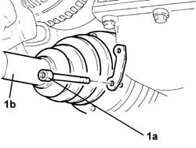
Applies to: engines: 2.5 V6; all production periods; only with equipment: Q-System
1. Remove the retainer (1a) and release the front right brake caliper flexible hose (1b) from its mounting bracket.
2. Release the brake pad wear sensor cable (2a) and the front right wheel speed sensor cable (2b) from their mounting brackets.
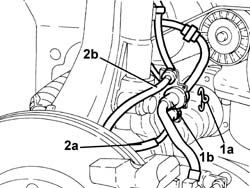
Applies to: engines: 2.5 V6; all production periods; only with equipment: Q-System
1. Undo the bolt securing the anti-roll bar joint mounting bracket to the front shock absorber fork.
2. Undo the bolt fixing the front shock absorber fork to the track control arm, shock absorber stem side.
3. Undo the bolt fixing the front shock absorber fork to the track control arm, track control arm side.
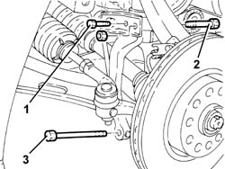
Applies to: engines: 2.5 V6; all production periods; only with equipment: Q-System
Position a hydraulic jack under the hub steering knuckle.
1. Undo the nut (1a) and disconnect the upper track control arm (1b) from the front hub steering knuckle using tool (1c).
 | Name | Country |
|---|---|---|
1c | Extractor | 1.821.169.000 |
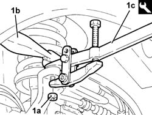
Applies to: engines: 2.5 V6; all production periods; only with equipment: Q-System
1. Lower the hydraulic jack and remove the front shock absorber fork with track control arm.
Move the steering knuckle/drive shaft assembly from the intermediate half shaft.
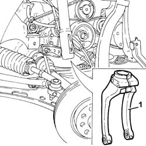
Applies to: engines: 2.5 V6; all production periods; only with equipment: Q-System
1076B52 exhaust pipe (one) leaving l/h or r/h exhaust manifold - r + r (left).
1. Undo the bolts (1a) and remove the intermediate drive shaft (1b).
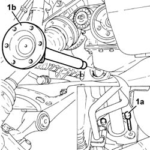
Applies to: engines: 2.5 V6; all production periods; only with equipment: Q-System
1. Remove the differential shaft oil seal.
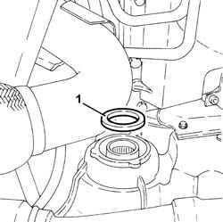
Applies to: engines: 2.5 V6; all production periods; only with equipment: Q-System
Refitting
Removing1. Fit the differential shaft oil seal (1a) using the tools (1b) and (1c).
| Name | Country |
|---|---|---|
1b | Fitting tool | 1.821.170.000 |
| Name | Country |
|---|---|---|
1c | Grip | 1.821.171.000 |
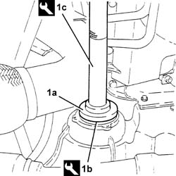
Applies to: engines: 2.5 V6; all production periods; only with equipment: Q-System
1. Fit the intermediate half shaft (1a) and tighten its bolts (1b) to the specified torque.
 | Fastening | Component | Ø | Value (daNm) |
|---|---|---|---|---|
1b | Bolt | INTERMEDIATE DRIVE SHAFT | - | Support side - |
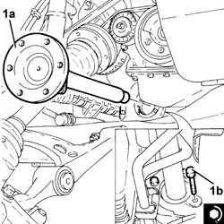
Applies to: engines: 2.5 V6; all production periods; only with equipment: Q-System
1076B52 exhaust pipe (one) leaving l/h or r/h exhaust manifold - r + r (left).
Replace the front shock absorber fork with track control arm in its housing.
Raise the hydraulic jack placed under the steering knuckle.
1. Connect the upper track control arm (1a) to the front steering knuckle and fix it tightening the nut (1b) to the recommended torque.
| Fastening | Component | Ø | Value (daNm) |
|---|---|---|---|---|
1b | Nut | FRONT SUSPENSION TOP LEVER | M10 | Front hub steering knuckle side 4.3 - 4.7 |
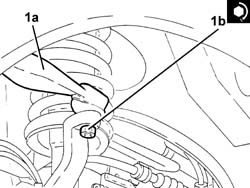
Applies to: engines: 2.5 V6; all production periods; only with equipment: Q-System
Remove the hydraulic jack from under the hub steering knuckle.
1. Tighten the bolt fixing the front shock absorber fork to the track control arm, track control arm side to the recommended torque.
| Fastening | Component | Ø | Value (daNm) |
|---|---|---|---|---|
1 | Bolt | FRONT DAMPER FORK ON WISHBONE | M12 | (Lower track control arm side) 10.8 ÷ 13.2 |
2. Tighten the bolt securign the front shock absorber fork to the track control arm, shock absorber stem side.
| Fastening | Component | Ø | Value (daNm) |
|---|---|---|---|---|
2 | Bolt | FRONT DAMPER FORK ON WISHBONE | M12 | (Shock absorber side) 8.1 - 8.9 |
3. Tighten the bolt securing the anti-roll bar joint mounting bracket to the front shock absorber fork.
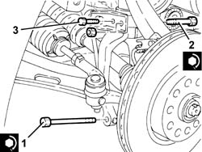
Applies to: engines: 2.5 V6; all production periods; only with equipment: Q-System
Firx the brake pad wear sensor cable and the front right wheel speed sensor cable to their mounting brackets.
Fix the front right brake caliper flexible hose to its mounting bracket and fit the retainer.
1. Connect the front right half shaft (1a) to the intermediate shaft nd tighten the new bolts (1b) to the specified torque.
| Fastening | Component | Ø | Value (daNm) |
|---|---|---|---|---|
1b | Bolt | FRONT DRIVE SHAFT COMPLETE WITH JOINTS | M8 | Intermediate drive shaft side 4.0 - 4.4 |
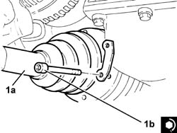
Applies to: engines: 2.5 V6; all production periods; only with equipment: Q-System
7055B54 under-engine guard - r r .
- 7055B39 front additional wheel arch half (one), lh or rh, front element - r r (right).
4450B10 Front WHEEL (one) - R.R. (left).
Connect the battery terminal (-).
2130A04 Automatic transmission FLUID - Check level and top up, .if necessary .